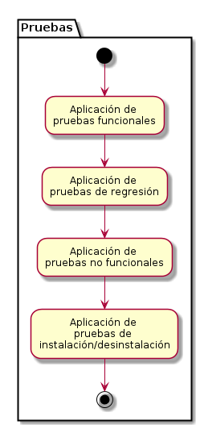

Metodología de Desarrollo de Software Libre (MDSL) Versión 2.0
Pruebas
Plantilla de Pruebas Funcionales
Esta plantilla debe contener los casos de prueba para cada uno de los casos de uso definidos para el software, según se especifica en la tabla presentada a continuación.
Caso de prueba para el caso de uso "Título del caso de uso"
Número del caso de prueba: NºXX
Escenario
[Se indica si el caso de prueba se realiza para el flujo básico, para flujos alternativos o para requisitos especiales del caso de uso respectivo.]
Objetivo
[Se indica el propósito que se persigue al ingresar u omitir datos de entrada al software para el escenario específico bajo el cual se plantea el caso de prueba.]
Pre-condición
[Se indica el requisito que debe cumplir el software para poder ejecutar el caso de prueba, por lo general este requisito es la misma condición de entrada que se especifica en la descripción textual del caso de uso respectivo.]
Pasos para realizar el caso de prueba
[Se indican los pasos que debe llevar a cabo el probador en el software para ejecutar la prueba, por ejemplo: 1) Entrar a la función “Registrar proyecto”. 2) Ingresar los datos solicitados a excepción del título del proyecto, el cual debe dejarse en blanco. 3) Pulsar la opción “Guardar”.]
Salida esperada [Se indica el resultado que debe emitir el software, según el escenario de prueba, indicado en la descripción del caso de uso respectivo.]
Salida obtenida [Se indica si el comportamiento del software al aplicar el caso de prueba respectivo es igual o diferente a la salida esperada. Una salida obtenida que sea diferente a la salida esperada se considera como un error o falla en el software.]
Plantilla de Pruebas No Funcionales
Ambiente de PruebaRecursos lógicos: [Se indican las herramientas a utilizar para realizar las pruebas, por ejemplo, herramientas automatizadas.]
Recursos fìsicos: [Se indican las características del equipo (hardware) a utilizar para realizar las pruebas, por ejemplo, tipo de computador y su velocidad, tipo de memoria, características de disco duro, etc.]
- [Se indican las variables asociadas a los atributos de calidad del software que se estudiarán con las pruebas no funcionales. Por ejemplo, para pruebas de rendimiento se pueden estudiar variables como: tiempos de respuesta, capacidad de almacenamiento de datos, entre otras.]
Flujograma de actividades
